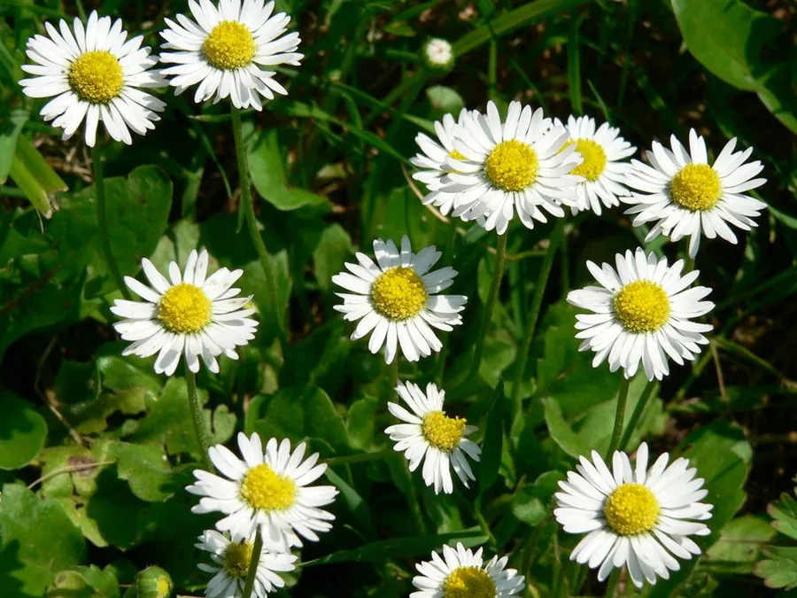

花卉与草本 · 植物界
雏菊 Bellis perennis

菊科多年生草本，花朵小巧、白瓣黄心，是早春草坪与花坛常见的花卉，原产欧洲，英文名意为“太阳之眼”。
- 分类
- 门被子植物门纲木兰纲目菊目科菊科属雏菊属
- 栖息环境
- 欧洲的草地、草坪与路旁，喜凉爽、阳光充足
- 地理分布
- 原产欧洲，现世界各地广泛栽培，中国各地常见
- 保护级别
- 暂无评估
物种志
雏菊为菊科雏菊属多年生草本，常作二年生栽培，株高 5–15 厘米，叶基生，倒卵形至匙形，排成莲座状。头状花序单生，直径 2–4 厘米，舌状花白色或粉红色，中央管状花黄色，花期 3–5 月；果实为瘦果。
雏菊原产欧洲，常见于草地、路旁和草坪，喜凉爽、阳光充足和湿润的环境，耐寒性较强，忌酷热。它的花白天开放，傍晚和阴天闭合，英文名由“白天的眼睛”演化而来，形容花朵随日开合。雏菊植株矮小、花朵密集，是早春花坛和草坪边缘的常见点缀，也常与三色堇、郁金香搭配布置；栽培以秋播为主，也可分株繁殖；植株矮小，适合与郁金香、风信子等球根花卉混植。
形态与习性
- 株高5–15 厘米，叶基生莲座状
- 花期3–5 月，单朵花晨开暮合
- 果期花后结瘦果
- 光照喜充足阳光
- 水分喜湿润，忌干旱
- 土壤疏松肥沃、排水良好的壤土
- 繁殖以秋播为主，也可分株
- 主要用途花坛、草坪边缘、盆栽
趣味知识
- 雏菊的花白天开放、傍晚闭合，英文名意为“太阳之眼”。
- 雏菊植株矮小、花朵密集，是早春花坛和草坪边缘的常见点缀。
- 在欧美庭院中，雏菊常被视为天真、纯洁的象征。
- 它耐寒性较强，早春即可开花，是春季最早开放的花卉之一。